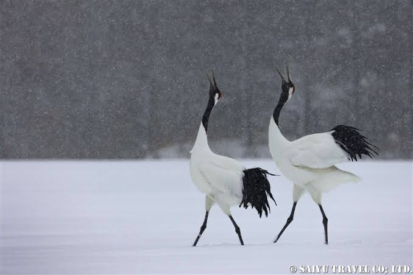
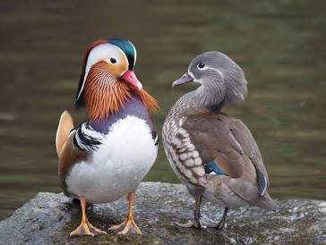
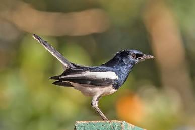
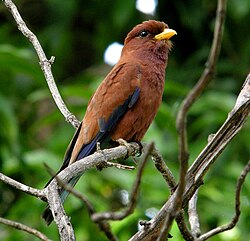

하늘과 땅을 연결하는 그들의 날갯짓이 멈추지 않도록.
환경 오염과 서식지 파괴 등으로 인해 생존에 위협을 받는 새들이 많아지고 있습니다. 우리의 곁을 떠나가고 있는 소중한 한국의 멸종 위기 조류들을 소개합니다.

월동지 파괴
평화의 상징이지만, 개발과 서식지 파괴로 갈 곳을 잃어가는 겨울 나그네입니다.

서식지 훼손 (천연기념물)
화려한 빛을 가졌으나, 오염되는 내륙 수계와 산림 훼손으로 둥지를 잃어가고 있습니다.

도심 생태계 위협
우리 삶 가장 가까운 텃새이지만, 급변하는 도심 환경 속에서 생존의 위협을 받습니다.

기후변화
숲의 에메랄드라 불리지만, 기후변화와 서식지 파괴로 점차 찾아보기 힘들어지고 있습니다.
그들이 마주하는 거대한 유리벽, 연간 한국에서 투명창과 방음벽에 부딪혀 목숨을 잃는 야생 조류의 수는 8,000,000마리에 달합니다
새들이 유리창을 인식할 수 있도록 하는 최소한의 규칙입니다.
가로10cm,
세로 5cm 간격의 패턴만으로도 충돌의 비극을 막을 수 있습니다.
VS
당신의 따뜻한 관심이 모여 새들의 하늘을 아름답게 바꿉니다. 위기에 처한 새들이 다시 안전하게 날아오를 수 있도록 돕는 구체적인 구호 및 생태 복원 사업을 소개합니다.
다치거나 조난당한 야생조류 및 야생조수류를 현장에서 구조하고, 전용 재활센터를 통해 자연의 품으로 안전하게 복귀시킵니다.다치거나 조난당한 야생조류 및 야생조수류를 현장에서 구조하고, 전용 재활센터를 통해 자연의 품으로 안전하게 복귀시킵니다.
철새 이동 경로와 번식지를 정밀 모니터링하고, 겨울철 먹이 주기 및 환경 개선을 지속하여 생태계를 복원합니다.
시민들을 대상으로 생태 가치를 교육하고, 충돌방지를 위한 '버드 세이버 스티커'를 무상으로 보급합니다.
당신의 작은 관심이 하늘을 바꿉니다. 위기에 처한 새들이 다시 안전하게 날아오를 수 있도록 소중한 생명을 지키는 일에 함께해 주세요.
연대와 변화의 현장기록을 전해드립니다. 위기에 처한 새들을 지키기 위해 함께 땀 흘리는 사람들의 생생한 이야기와, 우리의 실천이 만들어낸 긍정적인 생태계의 변화를 만나보세요.